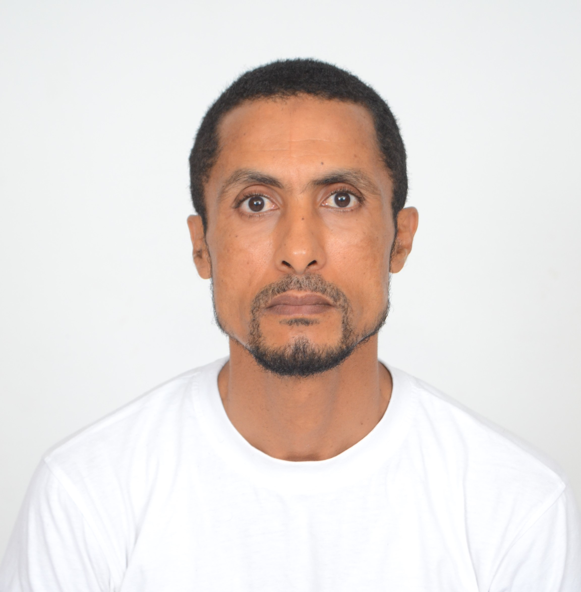

À propos de moi

🎯 Objectif : Mettre mes formations et acquis professionnels, en tant qu’ex-agent assermenté et formateur dans les réseaux electriques au sein de la LYDEEC, au service de votre honorable organisme.
📍 disponible immédiatement habilitations HT/HTA
🔹 Ancien cadre à la RADEEJ (El Jadida) · 20+ ans d’expérience dans les réseaux électriques, maintenance et formation.
Compétences & habilitations
⚡ Habilitation électrique
- Manœuvres réseaux BTA / BTB / HTA / HTB
- Équipement, exploitation et entretien des postes HTA / HTB
- Réseaux souterrains et aériens BTA–HTB : maintenance + exploitation
🧰 Logiciels & automatismes
- Step7, WinCC flexible, Intouch, Python, C++
- AUTOCAD, Caneco BT, CISCO (routage)
- Cartes ARDUINO et RASPBERRY, développement embarqué
- WinCC flexible / supervision industrielle
🧑🏫 Formation & sécurité
- Formateur habilité – centre de perfectionnement LYDEEC (1995–1997)
- Secourisme (Croissant Rouge Marocain, 1997) · risques électriques
- Formateur interne RADEEJ (transmission savoir-faire postes sources)
Parcours détaillé
| Période | Intitulé / Diplôme | Organisme / Entreprise | Spécificités |
|---|---|---|---|
| 2016 – 2019 | Responsable Technique Assermenté (Électricité) | RADEEJ, El Jadida | Département Électricité, agent assermenté |
| 2010 – 2016 | Contremaître Principal | RADEEJ, El Jadida | Supervision réseaux, maintenance préventive |
| 1997 – 2010 | Contremaître (département Électricité) | RADEEJ, El Jadida | exploitation et maintenance HT/BT |
| 1995 – 1997 | Formateur au Centre de perfectionnement | LYDEEC, Casablanca | formation aux réseaux distribution |
| 1993 – 1995 | Technicien maintenance postes livraison 60/20 kV | LYDEEC | postes haute tension |
| Formations | diplômes obtenus avec mention | ||
| 2017–2018 | Master pro Génie Électrique (mention Très Bien) | Faculté des sciences et techniques Settat | Génie électrique & intégration systèmes puissance |
| 2015–2016 | Licence pro Génie Électrique (mention Très Bien) | Faculté des sciences et techniques Settat | Électrotechnique industrielle et automatique |
| 1991–1993 | Technicien Spécialisé réseaux distribution (félicitations) | Centre LYDEC, Casablanca | réseaux électricité |
| 1990–1991 | 1ʳᵉ année Institut Supérieur Études Maritimes | ISEM Casablanca | officier marine marchande |
| 1989–1990 | Bac Sciences Mathématiques International (mention Bien) | Lycée – Maroc | mention Bien |
Langues : Français courant · Anglais écrit (bon), parlé (moyen) · Arabe (langue maternelle).
Formations additionnelles : Step7, Wincc flexible, Intouch, Python, AUTOCAD, CISCO, C++, Caneco BT, Arduino & Raspberry. • Secourisme (Croissant Rouge 1997).
Réseaux & contact direct
📬 Me joindre :